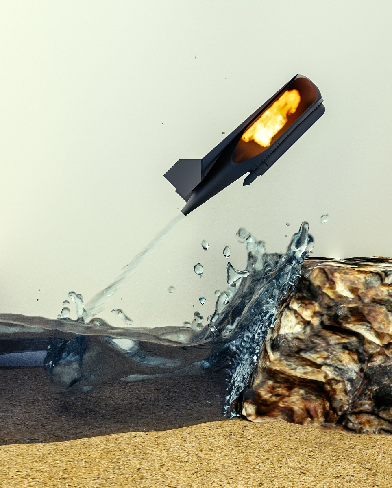
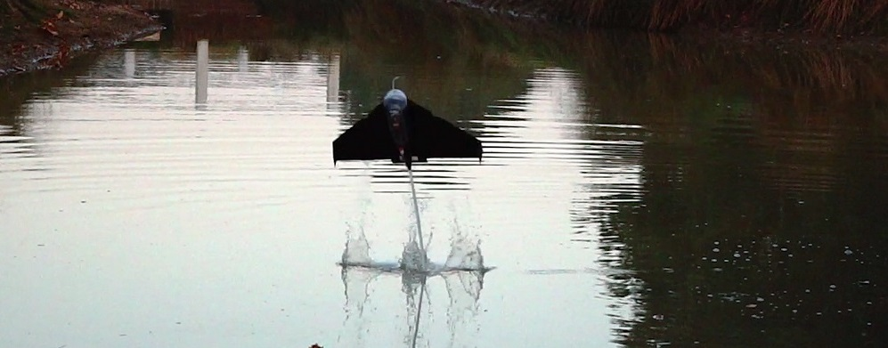
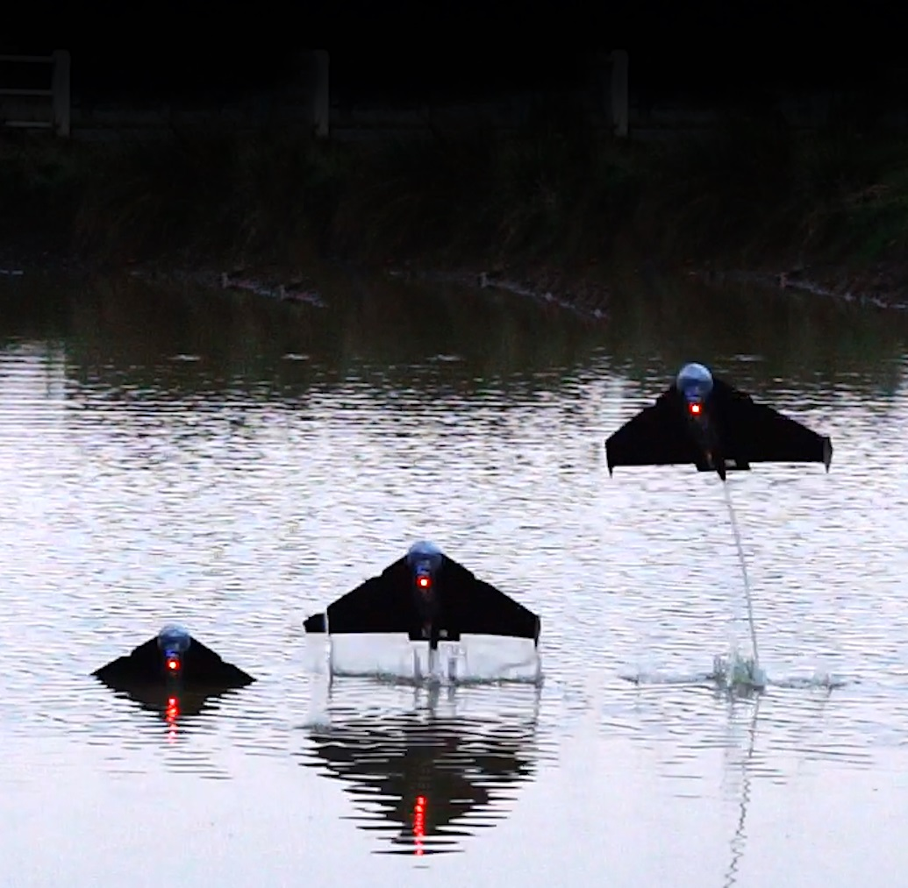
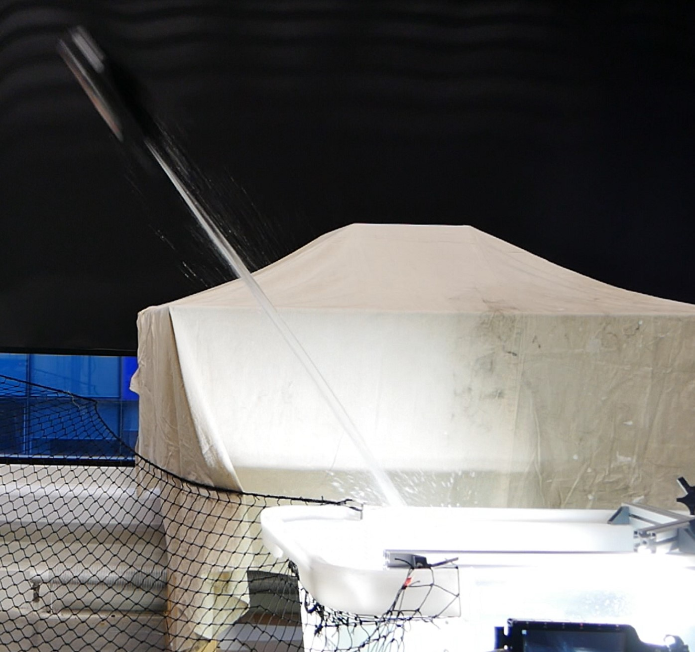
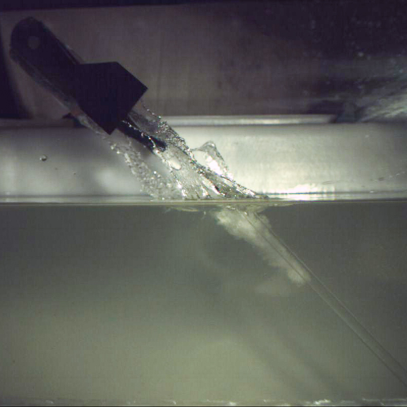
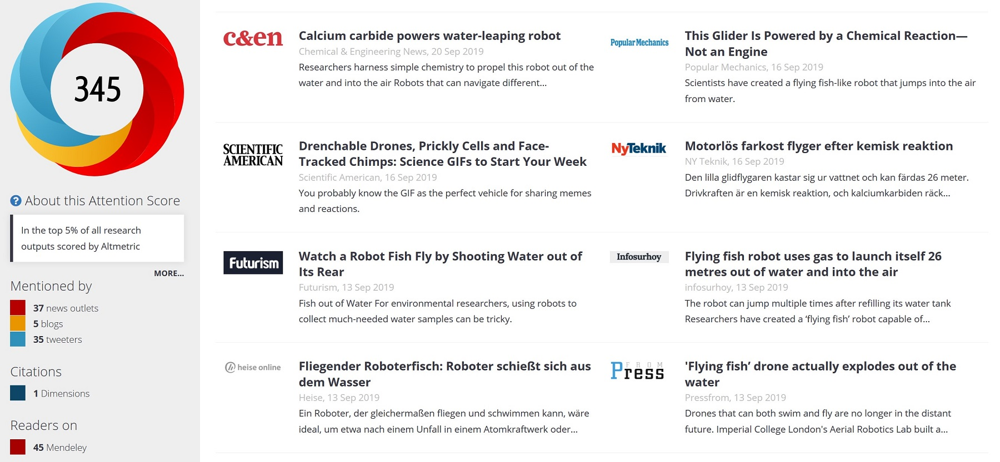

MEDUSA

Overview
The Aquatic Jump-glider reliably exits the water through the use of water-reactive fuel as a combustion source. This creates a powerful water jet and reach flight speeds. Generating up to 20x its weight in trust, the robot rapidly transitions from the water to the air before gliding to the target destination. The robot has demonstrated multiple consecutive jumps using a single container of calcium carbide. The chemical leverages the surrounding environment (i.e.water) to create acetylene which fills the partially submerged combustion chamber. An electric arc triggers the combustion to generate the pressure. The proposed platform was built and extensively tested both in the lab and in an outdoor flight zone. The results were published in Science Robotics (Septembre 2019) and was received with great enthusiasm by the robotics community as well as the general public. It was cited by 37 media outlets in 6 languages and on television. In addition, the testing of the robot relied on a launch system that allows a flying vehicle to reach flight speeds. This launch system was demonstrated with great success at the Science Museum of London during the museum “Lates” event during a flying paper plane interactive event.

Take-off of the Aquatic Jump-glider in an outdoor pond. The jet visible behind the robot propels it at up to 20G.
MEDUSA: A Multi-Environment Dual-Robot for Underwater Sample Acquisition
Robotics and Automation Letters 2020
Aerial-aquatic robots possess the unique ability of operating in both air and water. However, this capability comes with tremendous challenges, such as communication incompatibility, increased airborne mass, potentially inefficient operation in each of the environments and manufacturing difficulties. Such robots, therefore, typically have small payloads and a limited operational envelope, often making their field usage impractical. We propose a novel robotic water sampling approach that combines the robust technologies of multirotors and underwater micro-vehicles into a single integrated tool usable for field operations. The proposed solution encompasses a multirotor capable of landing and floating on the water, and a tethered mobile underwater pod that can be deployed to depths of several meters. The pod is controlled remotely in three dimensions and transmits video feed and sensor data via the floating multirotor back to the user. The `dual-robot' approach considerably simplifies robotic underwater monitoring, while also taking advantage of the fact that multirotors can travel long distances, fly over obstacles, carry payloads and manoeuvre through difficult terrain, while submersible robots are ideal for underwater sampling or manipulation. The presented system can perform challenging tasks which would otherwise require boats or submarines. The ability to collect aquatic images, samples and metrics will be invaluable for ecology and aquatic research, supporting our understanding of local climate in difficult-to-access environments.
PublicationHighlights video
Selected Media




